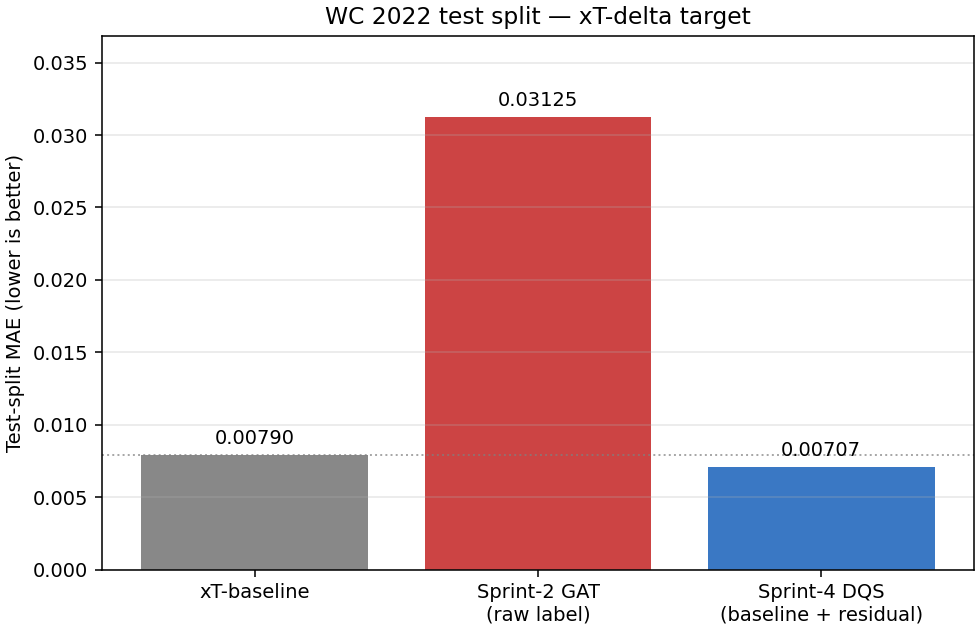
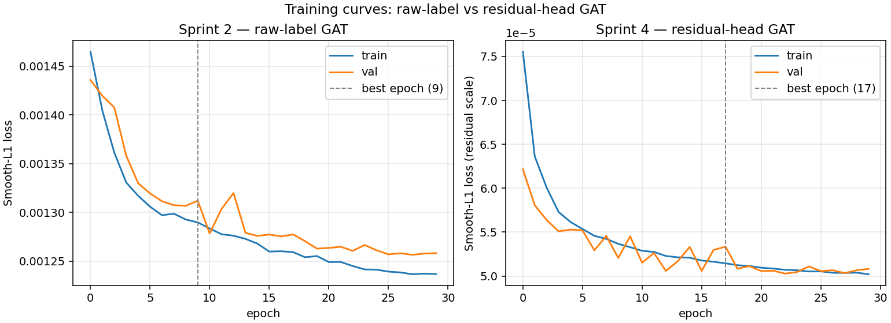
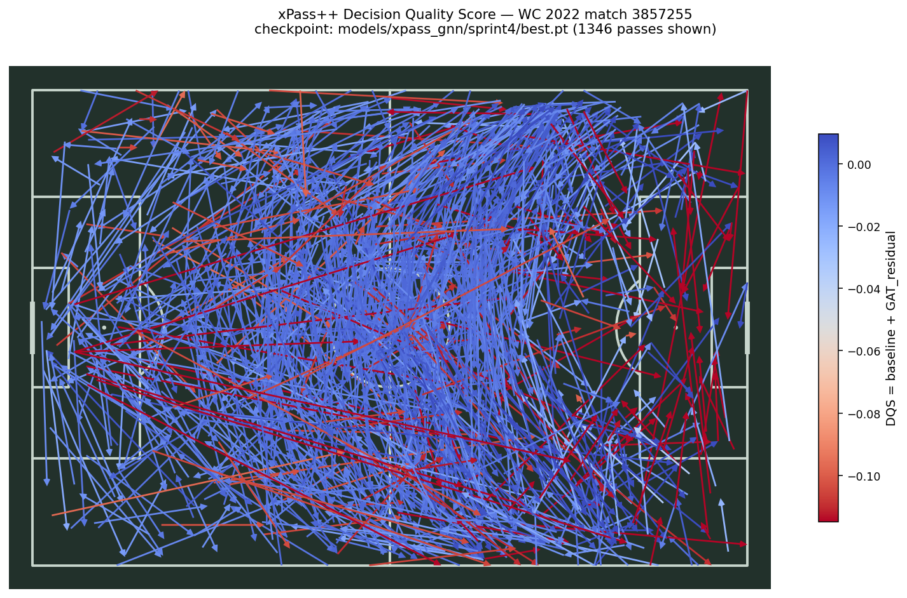

Futbolda pas ve şut kararlarının kalitesini ölçen, Graph Attention Network (GAT) tabanlı bir Decision Quality Score modeli. Oyuncu, takım ve bağlamsal özellikler tek bir graf çerçevesinde birleştiriliyor.



Her piksel, o konumdan verilen kararın GAT tarafından hesaplanan Decision Quality Score'unu temsil eder. Yeşil → yüksek kaliteli karar, kırmızı → düşük kaliteli.
DQS · xPass++ v3.0